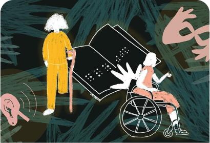

You
YouReply CommentsReply Comments
It's important to approach discussions about gender
issues with patience and understanding, instead of
patronizing others. We should strive to create
open and respectful dialogue where everyAjeng
open and respectful dialogue where everyAjeng
Hearing Monik's story, I wanted to know more about why children as young as her sister would rush into marriage. Moreover, Monik claims that this kind of thing is common in her village. As far as I know, there have been efforts from the government, community groups, or nongovernmental organizations to intensify anti-child marriage campaigns in various provinces, including Monik's village. However, why is it that in reality there are still many practices of this kind, even the initiative comes from the child himself. What strategies can be applied so that understanding of child marriage, violence, gender issues, and various other social issues can be accepted and applied by people who have not been exposed to this information?
According to the influencing director at Yayasan Plan International Indonesia, Nazla Mariza, approaching the community, especially the grassroots who do not have understanding and awareness, we need to look at their interests and context. This is because each target audience has different interests and socio-cultural contexts."We have to make a situation analysis by finding out what is important to them, who they listen to, who they look up to, or who they trust. Maybe they don't trust me as a new person," said Nazla.When talking to young people, it's good to use children of the same age who have been educated to influence their peers. In addition, we need to use language that is easy for them to accept so that the message is not misunderstood."We definitely avoid patronizing [language]," added Nazla. In making preparations before dealing with community groups that do not yet have awareness of certain social issues, writer and activist Kalis Mardiasih said there are several things that need to be considered.
Related Post
The critique of decolonialism applies to the spectrum of
feminism that is often assumed to have originated from the
liberal women's movement in the West.Decolonial FeminismRead More
Discussions about gender and disability often fall into
two different domains: gender issues are one thing,
disability issues are another.
Gender and DisabilityRead More
White feminism exists only to benefit white groups. It is
even considered to perpetuate gender violence and
injustice.White FeminismRead More
Contact031-12 08 16univy@support.womenRed Stone HQRed Stone 01414 51 Jakarta
Follow usFacebookInstagramTwitterTiktokFlickr
Support fromBandungKuala LumpurParisCopenhagen
© UNIVY 2024Stay up to date on what is happening atnify